Durante l'anno scolastico ho partecipato al corso Artisti in Progress, un laboratorio nato proprio con l'obiettivo di dipingere e abbellire le mura della nostra scuola con le celebri opere di Matisse. Inizialmente l'orientamento della classe era totalmente rivolto verso quel tipo di stile. Tuttavia, le cose sono cambiate quando ci siamo ritrovati a interessarci anche a un'opera di Kandinsky: uno stile decisamente più geometrico, ma ugualmente acceso, vibrante e ricco di colore.
Appena l'ho vista, ho insistito tantissimo per sceglierla. Quest'opera rappresenta una vera e propria manifestazione della musica nell'arte. Kandinsky non dipinge solo forme, ma traduce i suoni, i ritmi e le vibrazioni musicali (ispirate dall'opera del compositore Musorgskij) in linee geometriche e colori vibranti.
Inoltre, l'idea iniziale era quella di dipingere su una delle comuni mura dei corridoi, ma alla fine ci siamo ritrovati a realizzare il murales proprio nell'Aula Magna, il posto più importante e visibile di tutta la scuola!
Il lavoro di preparazione è stato geometrico e millimetrico. Ecco tutte le fasi del tracciamento e dello sviluppo divise in otto step sequenziali:
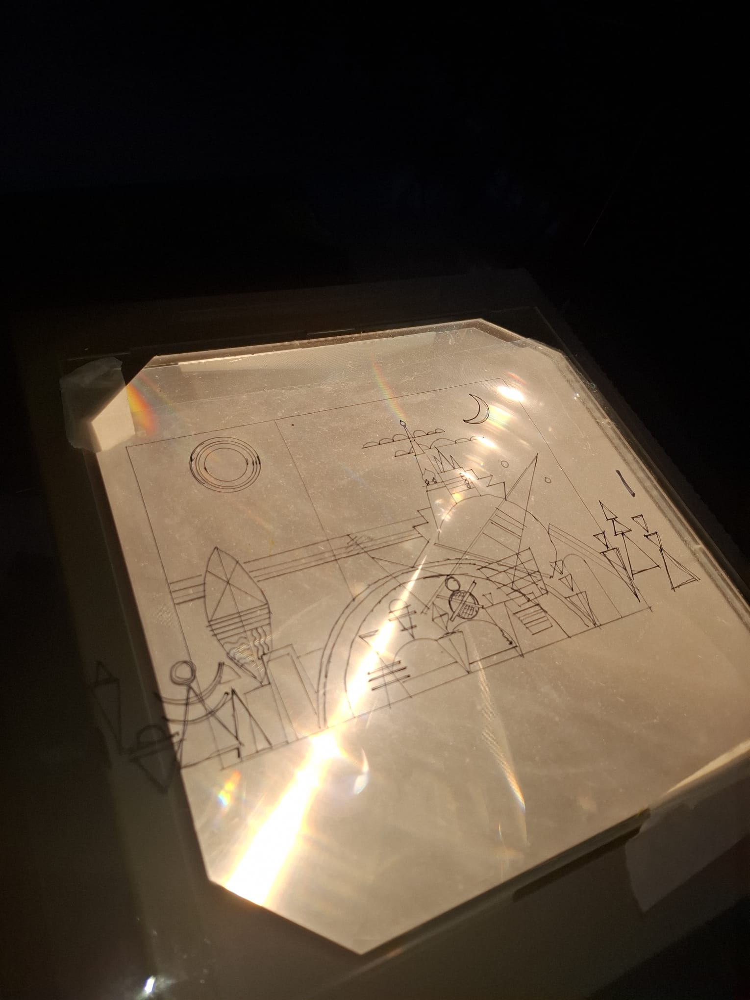
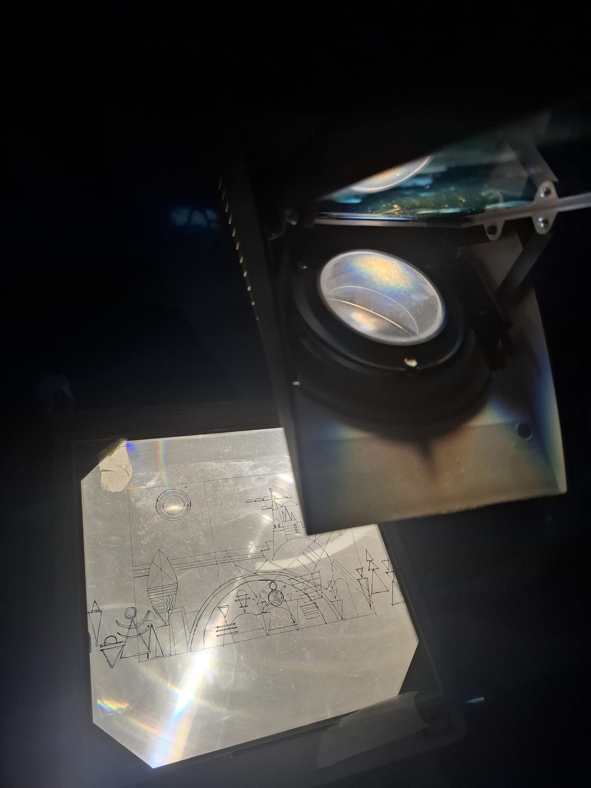
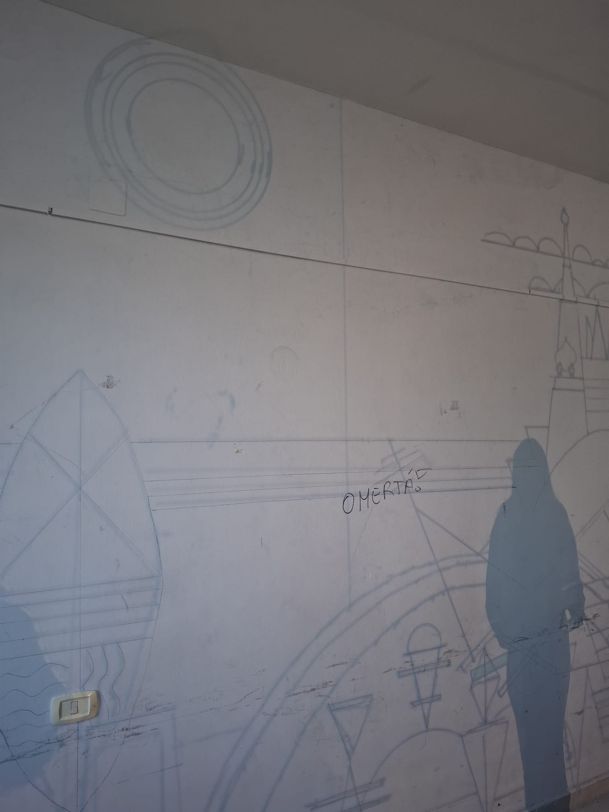
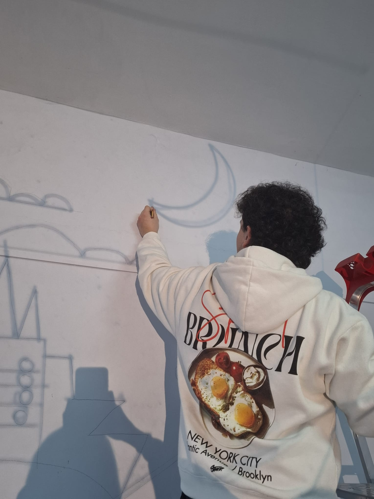
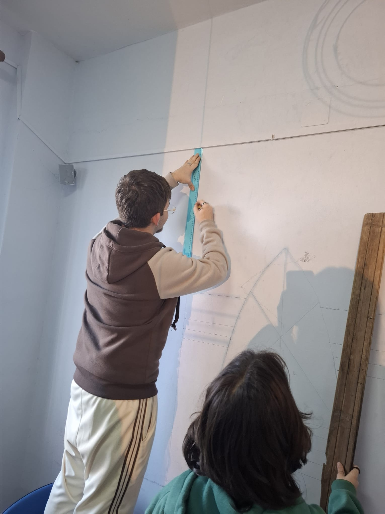
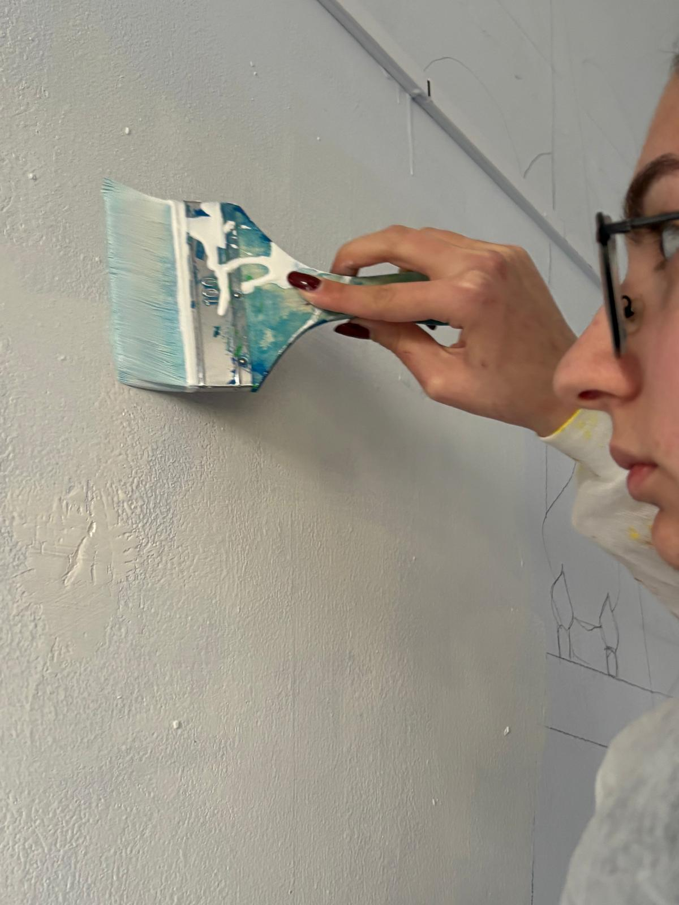
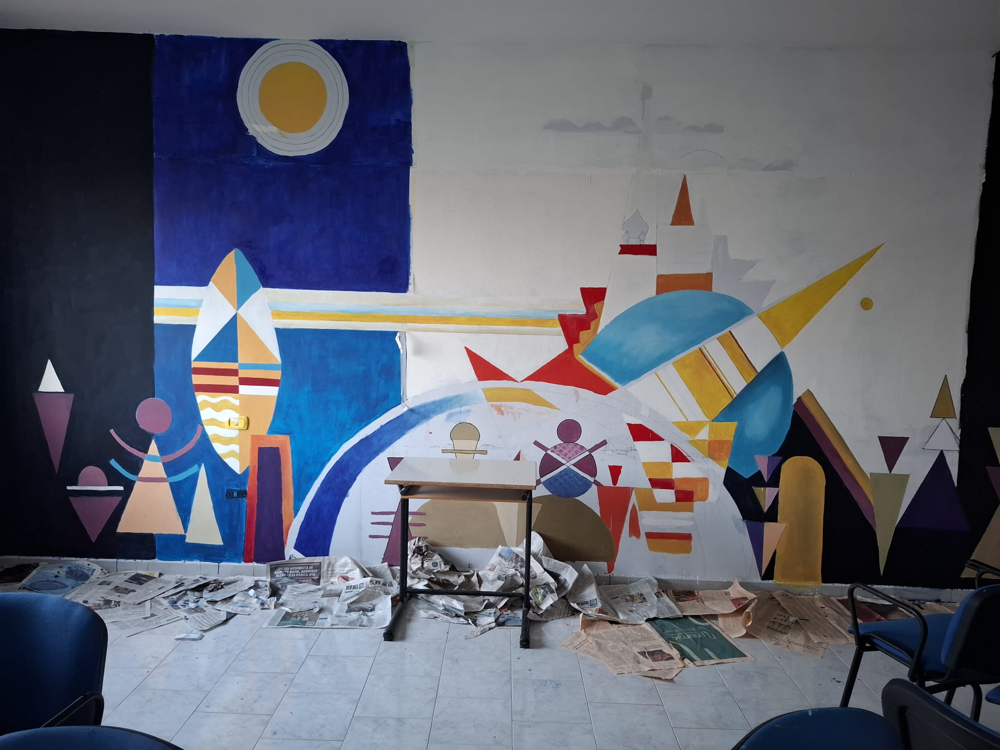
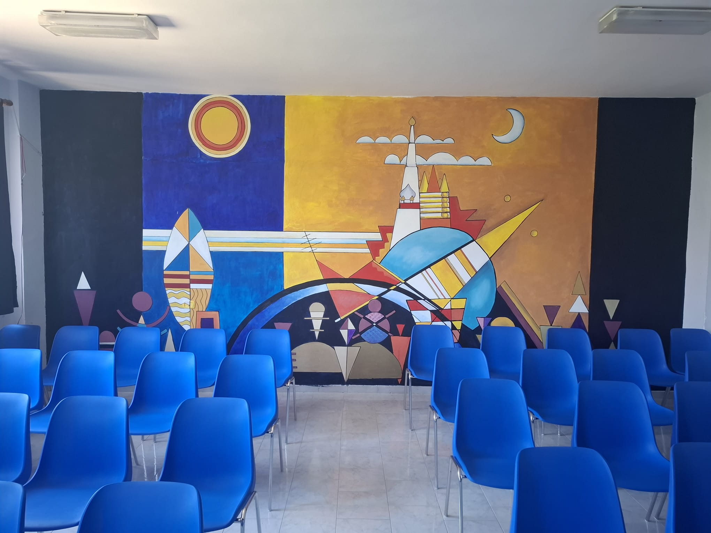
Dipingere un murales non significa solo usare il pennello, ma anche gestire il caos del laboratorio e stare attenti a non fare danni.
Abbiamo imparato che i pennelli vanno lavati immediatamente prima che la pittura acrilica si indurisca. Se ti dimentichi, il pennello diventa duro come un sasso, praticamente inutilizzabile!
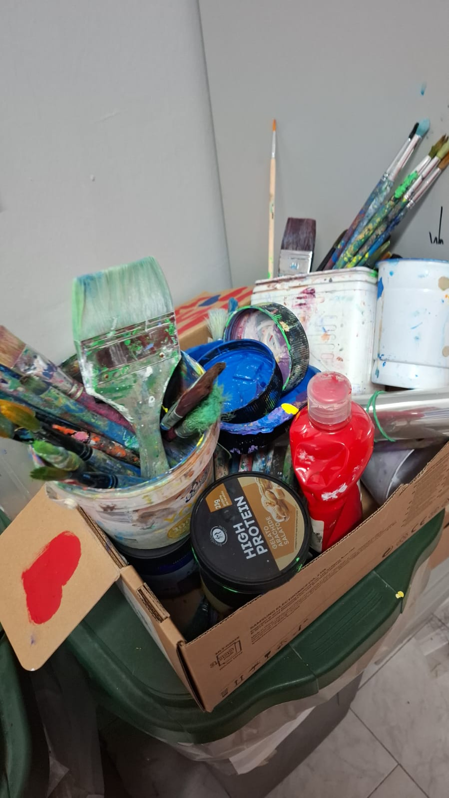
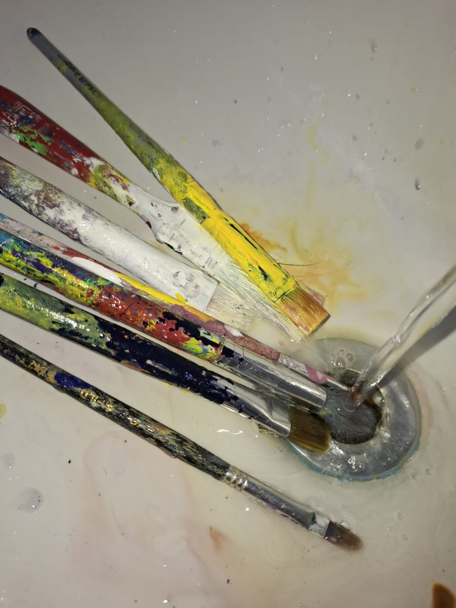
Prima ancora di usare i barattoli bisogna stendere strati di giornali a terra per evitare di ridipingere anche il pavimento della scuola.
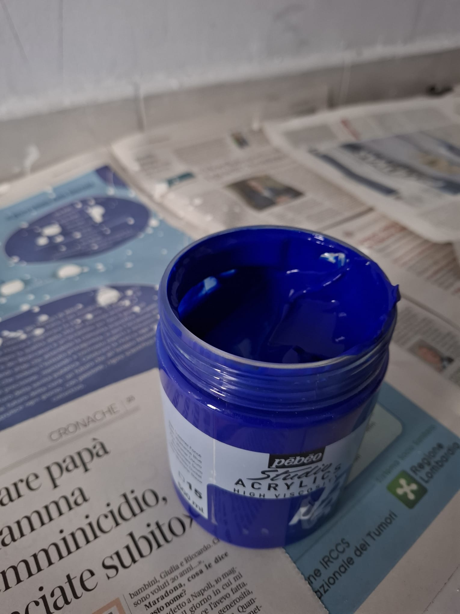
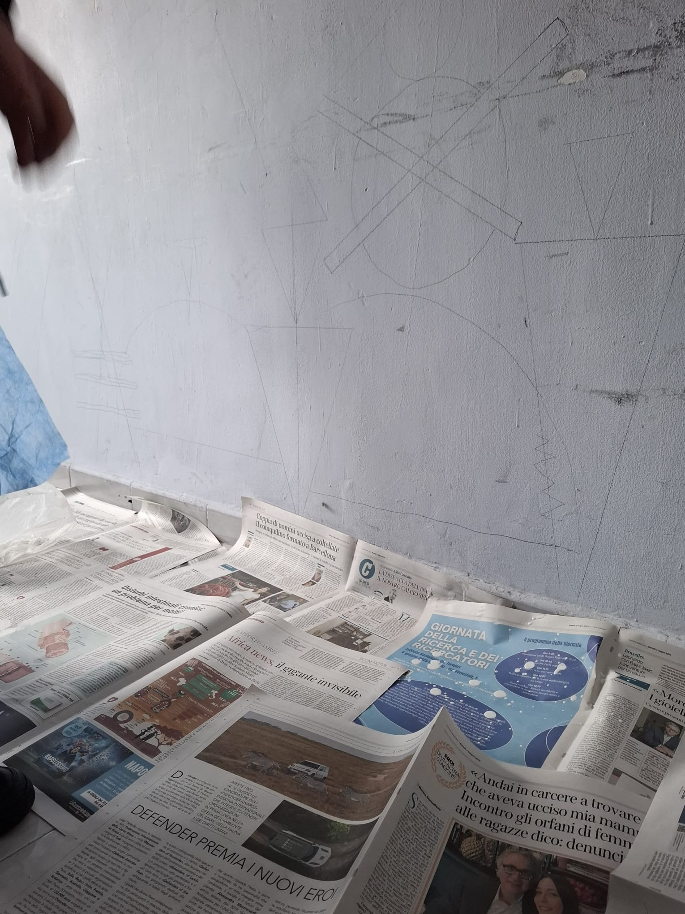
Dipingere è fantastico e liberatorio, ma è impossibile non sporcarsi! Ecco le prove fotografiche di me mentre lavoro e del pasticcio con la vernice stampata in faccia.
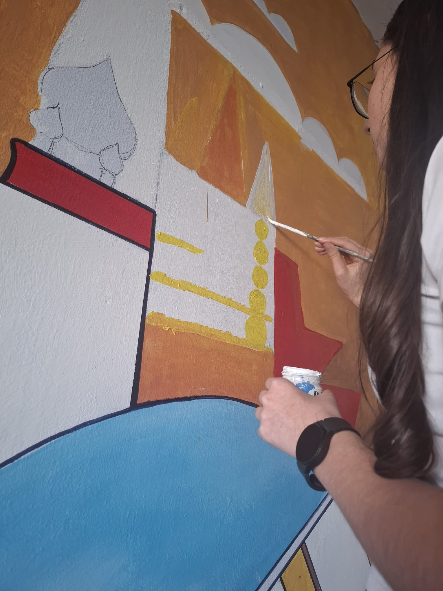
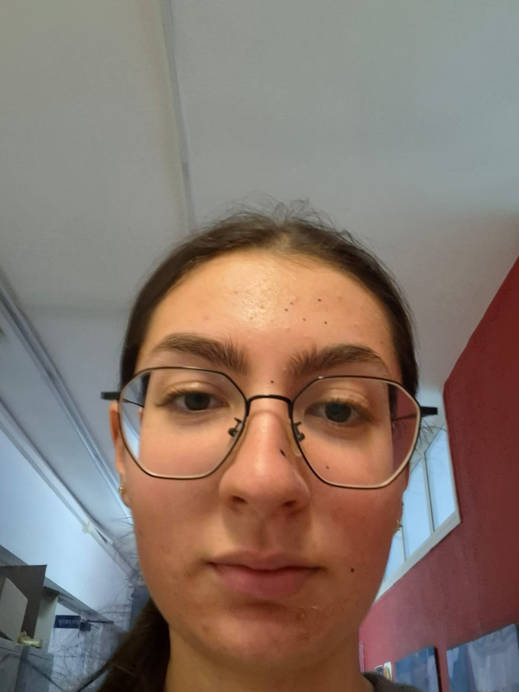